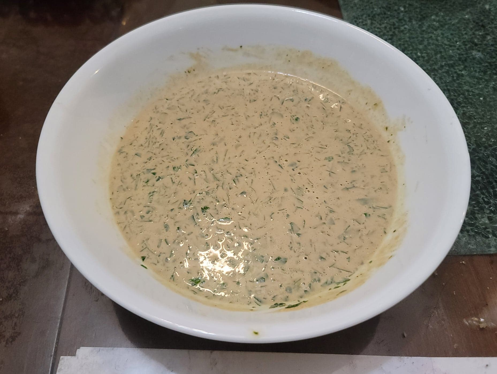

Tahini Sauce

Ingredients:
- 3/4 cup Tahini
- 1/2 cup Lemon juice, about 2 lemons
- 1/4 cup water
- 2 cloves Garlic
- 1/2 tsp Salt
- Optional: 1 cup Parsley, finely chopped
Instructions:
- Place all the ingredients except for the parlsey into a food processor. Process until homogenous, adding more water as needed for your desired consistency.
- Transfer to a serving bowl and mix in the parsley if using. Taste and add salt if needed. Serve with falafel or warm pita.